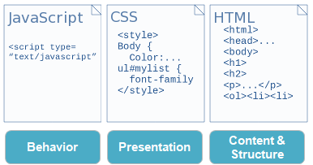
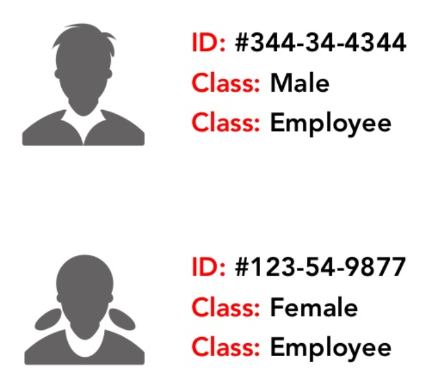

Fundamentals of HTML and CSS
F28WP Web Programming
2020-2021
## Overview * Review * Fundamental **HTML** and **CSS** concepts? * Review HTML and CSS **Syntax** * Dynamic vs Static Websites * **Examples** * Questions and Discussion <aside class='notes'> This lecture will provide an introduction to the core HTML and CSS concepts [pause] For example, essential HTML tags and formatting syntax. We will use a number of examples to show html and css concepts in context. [pause] We will also discuss websites that are generated dynamically versus static websites. [pause] We will then close with some examples and a closing discussion on the subject. </aside>
## Revision Question What does IP Stand for? * Internet Programming * Internet Protocol * Internal Package * Internal Protocol <aside class='notes'> </aside>
## Answer IP = Internet Protocol <aside class='notes'> </aside>
## Revision Question What does TCP Stand for? * Transfer Cache Practice * Transmission Control Protocol * Transmission Cache Protocol * Test Cache Program <aside class='notes'> </aside>
## Answer TCP = Transmission Control Protocol <aside class='notes'> </aside>
## Revision Question UDP (User Datagram Protocol) is a communications protocol that is primarily used for establishing low-latency and loss-tolerating connections between applications on the internet. * (a) True * (b) False <aside class='notes'> </aside>
## Answer * (a) True <aside class='notes'> </aside>
## What is the difference between **Static** and **Dynamic** Web Pages? <aside class='notes'> Let's ask the question [pause] What's the difference between a static and a dynamic web page? </aside>
## Static Web Pages **Static** website pages are self-contained individual pages (or pages) sent to the browser from the server one-page-at-a-time  <aside class='notes'> Static web pages are simple and written in the HTML language and stored in web server. Whenever server receives a request regarding a web page, it sends a response along with the requested web page to the client without performing any additional processing. It just locates that page on its hard disk and add HTTP headers, and reply back an HTTP response. </aside>
## Dynamic Web Pages **Dynamic** web content is built when the page is requested (by the user directly or programmatically while the user is on the page, e.g., Facebook updates)  <aside class='notes'> Dynamic web pages provide a solution for the static web pages. The dynamic web page content can vary depending on the number of parameters. As it is discussed above that dissimilar to static web age, it not just simply send HTML page in response. The web server calls a program located on the hard disk which can access a database, perform transaction procedure, etcetera. If the application program produces HTML output, which is used to construct an HTTP response by the web server. The web server sends the HTTP response thus created, back to the web browser. </aside>
## How do we structure content, presentation and behaviour? * What are the **layers/structure** of web design? <aside class='notes'> When you start to create a web page you need to think about structure. So it is easier to develop, maintain and debug. [pause] Hence, web pages often use a layering structure. </aside>
## Fundamentals of a Web Page  <aside class='notes'> Given these three layers. We have the fundamentals of a web page. [pause] Behaviour. Presentation. and Content. [pause] </aside>
## HTML  <aside class='notes'> Let's start by looking at HTML. HTML stands for Hypertext Markup Language. And is the standard markup language for documents designed to be displayed in a web browser. </aside>
## Hyper Text ## + ## Markup Language <aside class='notes'> Hyper Text is combined with a Markup language </aside>
## Markup Language * Set of **tags** * Purpose is to group and describe **content** ``` <tag>Content</tag> ``` <aside class='notes'> The markup language consists of tags. These tags use triangle symbols. Usually an open tag and a closing tag. [pause] As you can see in the slide. </aside>
## Can you list the essential HTML Tags? <aside class='notes'> Once you know how to write a tag [pause] That is using triangle delimiter symbols. [pause] You just need to know the essential predefined HTML tags and what each tag does. [pause] Do you know all of the HTML tags? [pause] </aside>
## Tag **Attributes** * Additional information about the tag element ``` <html lang="en"></html> ``` * Tag element format > name="value" <aside class='notes'> In addition to the tags additional attributes can be added [pause] The attributes provide control information. such as, size or language details. [pause] The attributes are usually defined in the opening tag delimiter in the form of the name and value assignment. As shown in the slide. </aside>
## Revision Question Are attribute values case-sensitive? * Yes * No <aside class='notes'> A question to get you thinking. [pause] Are attribute values case sensitive? [pause] Take a moment to think about this [pause] [pause][pause][pause] </aside>
## Answer Are attribute values case-sensitive? * Yes <aside class='notes'> Did you guess correctly? [pause] Yes attributes are case-sensitive. </aside>
## Revision Question Basic syntax for HTML tags and attributes is: * a. ```<tag attribute=value> </tag>``` * b. ```<tag attribute=value> <tag>``` * c. ```<tag attribute="value"> <tag>``` * d. ```<tag attribute="value"> </tag>``` <aside class='notes'> Another revision question [pause] What is the basic syntax for HTML tags and attributes. [pause] Take a moment to think about which one is correct from the options [pause][pause][pause] </aside>
## Answer Basic syntax for HTML tags and attributes is: * d. ```<tag attribute="value"> </tag>``` <aside class='notes'> Did you guess correct? [pause] The answer is d. [pause] </aside>
## Revision Question Choose the correct HTML tag for the largest heading * a. ```<head>``` * b. ```<heading>``` * c. ```<h6>``` * d. ```<h1>``` <aside class='notes'> This should be an easy question. [pause] Which is the correct HTML tag for the largest heading. [pause] Take a moment to think about your answer [pause][pause][pause] </aside>
## Answer Choose the correct HTML tag for the largest heading * d. ```<h1>``` <aside class='notes'> Did you guess correctly?[pause] The answer is d [pause][pause] </aside>
## Revision Question What is the correct HTML tag for inserting a line break? * a. ```<lb>``` * b. ```<break>``` * c. ```<br>``` <aside class='notes'> What is the correct HTML tag for inserting a line break? [pause] Take a moment to pick one. [pause][pause][pause] </aside>
## Answer What is the correct HTML tag for inserting a line break? * c. ```<br>``` <aside class='notes'> Did you guess correct? [pause][pause][pause] </aside>
## CSS  <aside class='notes'> Now let us move onto CSS. </aside>
## Cascade ## + ## Style Sheet <aside class='notes'> CSS stands for Cascading Style Sheets. CSS describes how HTML elements are to be displayed [pause] </aside>
## Stylesheet * Rules defining **presentation** * Targeted to specific **elements/tags** in the html <aside class='notes'> The style sheet is design to control the presentation [pause] Connects visual information to specific tags or elements in the html. </aside>
## Cascade * Manages priorities and conflicts * Multiple CSS rules * Importances and **inheritance** <aside class='notes'> The cascade component is for managing priorities and conflicts. [pause] CSS through cascade supports inheritance. </aside>
## inheritance * Elements inherit style properties  <aside class='notes'> A simple example is shown here [pause] As you can see how the html tags are structured in a hierarchical format. [pause] Style information can be passed down from parent to child. [pause] </aside>
## Inheritance  <aside class='notes'> For example, font size and font style defined in the top body tag is inherited by child paragraph tags. [pause] </aside>
Example
## CSS Syntax * Great Control * Override * Specific <aside class='notes'> The CSS syntax gives you enormous visual control [pause] The syntax is easy to override and can be very specific if needed [pause] Target all tags or a single element on the screen. [pause] </aside>
## CSS Control * Three terms for describing style: >1. CSS Rules 2. CSS Selectors 3. CSS Declaration <aside class='notes'> Three terms for describing style [pause] Firstly CSS rules. Secondly CSS selectors. Finally CSS declaration. </aside>
## CSS Rule ``` selector { property : value; } ``` --- * property:value is known as the **declaration** * Every style has a **selector** and **declaration** * property/value pair called a CSS Rule <aside class='notes'> Here shows an example of a CSS rule [pause][pause][pause] </aside>
## CSS Selector ``` body { font-family: Arial; } p {color: #112233; } a {color: red; } ``` --- * **selector** associates **css rules** with html elements <aside class='notes'> Here shows an example of a CSS selector [pause][pause][pause] </aside>
## CSS Syntax * CSS consists of a **selector** and a **declaration block**: The selector points to the **HTML element** you want to style * **declaration block** contains one or **more** declarations separated by semicolons. * Each declaration includes a CSS property **name and a value**, separated by a colon <aside class='notes'> The CSS syntax consists of a selector and a declaration block. [pause] The declaration block may contain one or more declarations seperated by colons [pause] Each declaration has a name and value. </aside>
## CSS Selectors * ``` Type (tag/element) ``` * ``` # ID ``` * ``` . Class ``` <aside class='notes'> We select tags or elements using either a type, an ID or a class [pause] </aside>
## **Type** (element) Selectors ``` body {declaration} p {delcaration} h1 {delcaration} ``` * Simplest selector * Targets html elements by name <aside class='notes'> Here is an example of a type selector [pause][pause] </aside>
## ID Selectors CSS ``` #logo {declaration} ``` HTML ``` <img id="logo" src="" alt=""> ``` * ID is an **attribute** added to the html * Reference ID in the CSS with a **hash** <aside class='notes'> Here is an example of an ID selector [pause][pause][pause] </aside>
## Class Selectors CSS ``` .cat {declaration} ``` HTML ``` <ul class="cat"> ``` * class is a html **attribute** added to the markup language * referenced in the css with a **period** <aside class='notes'> Finally an example of a class selector [pause][pause][pause] </aside>
## Which is better? ID or Class? <aside class='notes'> Should you lean towards IDs or classes for your selectors? </aside>
ID vs Class
• Can only be
one ID
•
Multiple classes
• ID is more specific
• Element can have both ID and multiple classes

## Revision Question Which style is this? ``` <body style="background-color: blue"> ``` * a. Inline style * b. External style sheet * c. External style stylist sheet * d. None of the above <aside class='notes'> A quick revision question. [pause] Which style is this? [pause] Take a moment to pick your answer from list of options. [pause][pause][pause][pause] </aside>
## Answer Which style is this? ``` <body style="background-color: blue"> ``` * a. Inline style <aside class='notes'> Did you guess correctly? [pause] The answer was A for an inline style [pause] </aside>
## Question The _______ property is used to set the color of the text. * a. pallet * b. color * c. text-decoration * d. design <aside class='notes'> What is the missing word? [pause] Take a moment to pick one of the options. [pause][pause][pause] </aside>
## Answer The _______ property is used to set the color of the text. * b. color <aside class='notes'> The correct answer is b for color [pause] Did you get it correct? [pause][pause] </aside>
## Question What does the following html/css code do? ``` <html><head> <style type="text/css"> p {font-size:32px;} </head> <body> This line displayed in default font size <p>Line formatted with element selector</p> </body> </html> ``` <aside class='notes'> Here is a small sample program written in HTML and CSS. [pause] What does the program output? [pause] Take a moment to look over the code [pause][pause][pause] </aside>
## Answer **Displays Nothing** * Missing closing ```</style>``` tag <aside class='notes'> Did you notice the missing tag? [pause][pause][pause][pause] </aside>
## Question What does the following HTML/CSS do? ``` <html><head> <style type="text/css"> #heading {color: #0000ff} </style> </head> <body> <p id="heading">Hello Hello</p> <p id="hello">What is happening here?</p> </body> </html> ``` <aside class='notes'> How about this small program? [pause] What does the following program output? [pause] Take a moment to study the listing [pause][pause][pause][pause] </aside>
## Answer Blue `Hello Hello' * Associated with a **valid** selector ID <aside class='notes'> Did you guess correctly?[pause] Says hello hello in a blue colored font. [pause][pause] </aside>
How do you validate your HTML and CSS?
## How do you validate your HTML and CSS? * https://validator.w3.org * http://jigsaw.w3.org/css-validator/ * https://validator.w3.org/checklink <aside class='notes'> One solution is to use one of the many validation programs available online [pause] Here shows just a few of the most popular ones to check your html and css syntax. [pause] </aside>
Online Validation Tools
Validate your website/html
## Summary * Understand **fundamental** HTML and CSS concepts * Essential **syntax** * Layers/management (HTML, CSS and Javascript) * Review (small taste) <aside class='notes'> This lecture has gone through the essential HTML and CSS concepts. [pause] If you're struggling with these fundamentals then you should put in extra time revising and bringing yourself up to speed. The support notes provide more details on the HTML and CSS standard. Also remember there are a number of text books on the topic that you can use to help you get up to speed quickly. </aside>
## To do this week ... * **Read** over the lectures * **Review** the revision questions * Work through tutorial practicals * Challenging – so start early * **Experiment** (get into good habits) <aside class='notes'> This week, review the lecture material. Including the support notes. Try the revision questions and activities. Get into the good habit of experimenting and trying out coding examples. [pause] Thank you. </aside>